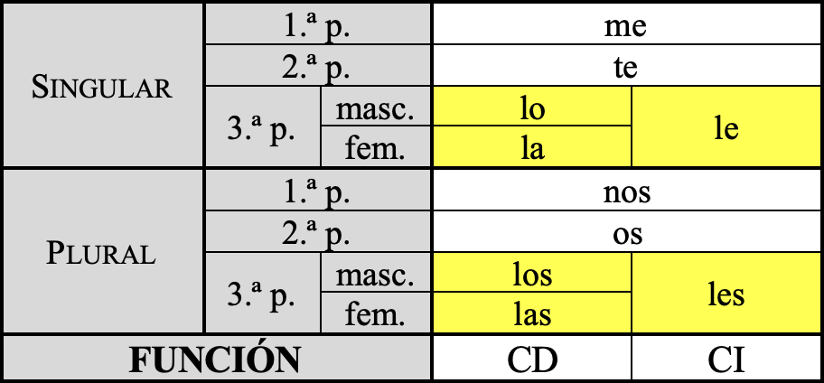

[4.2.1 a] (Uso incorrecto) Leísmo
¿La pregunta del millón? Si ves a una persona del sexo masculino, ¿qué dirías? ¿Que (a) "lo has visto" o que (b) "le has visto"? Para averiguar cuál es la respuesta correcta, hay que practicar un poco de sintaxis (como ves, es muy útil). De acuerdo con la norma de nuestra lengua, los pronombres de 3.ª persona (lo, la, le, los, las, les) se utilizan de forma diferenciada a partir de un único criterio: la función sintáctica que desempeña el elemento al que se refieren en la oración. Si funciona como CD, entonces se sustituirá por lo, la, los o las (de acuerdo con el género y número del elemento que desempeñe esta función); si funciona como CI, entonces se sustituirá por le o les (de acuerdo con el número singular o plural).

Pero claro, ¿cómo identificamos qué elementos desempeñan en una oración cualquiera la función de CD o de CI? Existen varias pruebas. Partamos de una oración como "entregué la mercancía a la responsable de la zona", por ejemplo.
|
CD
|
CI
|
|
Equivale a "lo + participio del verbo"
(lo entregado = "la mercancía")
|
En la mayor parte de las oraciones se corresponde con la persona beneficiaria o destinataria de la acción
(beneficiario de 'entregar la mercancía' = "la responsable de la zona")
|
|
Se convierte en el sujeto paciente de la oración pasiva de sentido equivalente ("la mercancía [sujeto paciente] fue entregada a la responsable de la zona").
|
No experimenta ningún cambio al transformarse la oración de la voz activa a la pasiva ("la mercancía fue entregada a la responsable de la zona).
|
De acuerdo con lo recogido en la tabla, el grupo "la mercancía" funciona como CD (se sustituirá por la: "la entregué a la responsable de la zona") mientras que el grupo "a la responsable de la zona" como CI (se sustituirá, pues, por le: "le entregué la mercancía).
Regresando a la oración propuesta al principio de este apartado ("¿lo has visto?" o "¿le has visto"?), lo visto es la persona de sexo masculino, que adopta la función de sujeto en la oración en voz pasiva correspondiente ("el chico o el hombre [sujeto paciente] ha sido visto por ti). Por todo ello, podemos concluir sin dudar que el pronombre adecuado aquí es lo: "lo has visto". Utilizar "le" en este caso supone un caso de leísmo.
Sin embargo, son taaaantas las personas que, en este y otros casos, utilizan el pronombre le en contextos como este (es a esto a lo que llamamos leísmo) que la Real Academia de la Lengua Española se ha visto obligada a admitir la construcción "le has visto" aunque atente contra la norma anterior (en esta página encontrarás la misma tabla con los pronombres que hemos reproducido arriba, solo que en ella, en la fila de la 3.ª persona del singular en masculino, además de "lo", aparece también "le"). Sin embargo, existe una sola condición para admitir esta excepción: que se refiera a una sola persona, de sexo masculino (por tanto, solo se admite en singular, nunca en plural; con individuos de sexo masculino, nunca femenino): así, se admite "le has visto" si el individuo visto pertenece al sexo masculino, pero sería incorrecto "*le has visto" si pertenece al sexo femenino (en este caso obligatoriamente habría de ser "la he visto"); asimismo, es válido en el momento en que se aplica sobre una sola persona, porque en plural sería incorrecto "*les has visto" (lo correcto nuevamente aquí sería "los has visto").
| ¿A qué se refiere el grupo que funciona en la oración como CD? |
|
Una sola persona de sexo masculino (una sola) = LO / LE (también se admite este último)
Una sola persona de sexo femenino (una sola) = solamente LA
Más de una persona de sexo masculino = solamente LOS
Más de una persona de sexo femenino = LAS
|
| (Para profundizar) | - https://blog.lengua-e.com/2007/el-leismo/ |
.png)